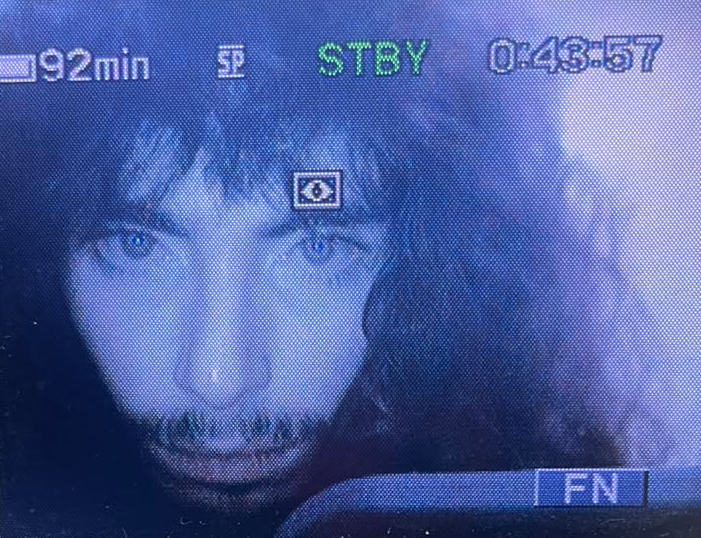

Amen Allah Majouli is a director, videographer and editor. His work is deliberately vague: through the lens of old cameras, he tries to recreate a feeling of nostalgia for moments never lived.
Exploring death, memory and self-reflection, he looks for the beauty and meaning hidden in the mundane, and works to revive physical media, the DVD, in an age of endless digital landscapes.
— IMDb mini biography by Amen Allah Majouli
